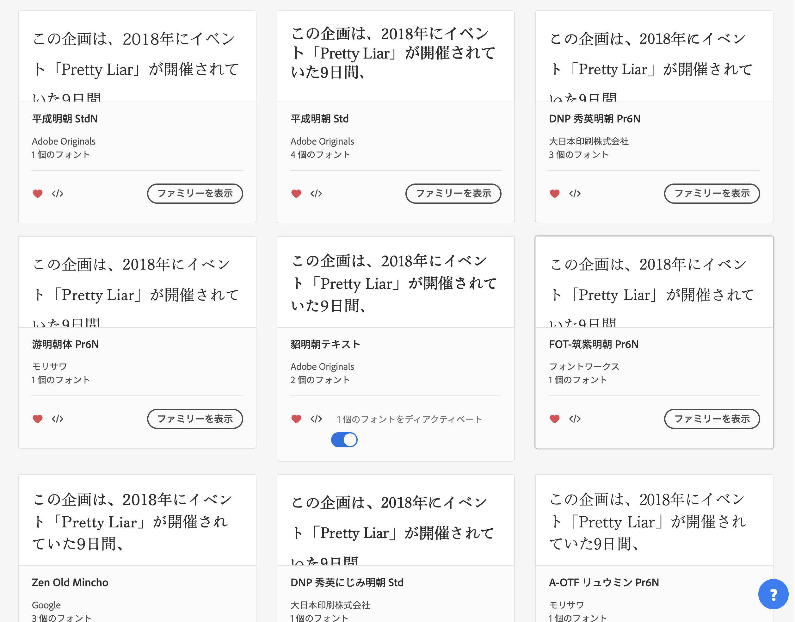

私と「私とPretty Liar」
2022.9.27
こんにちは。速水奏ちゃんかわいいbot・廻、縮めて、はやかわめぐると申します。
速水奏さん・ミステリアスアイズの担当プロデューサーをしております。
企画「私とPretty
Liar」を恐れ多くも主催させていただき、皆様のおかげで最後まで無事走り切ることができました。
本当にありがとうございました。
本当は今日記事を書く予定はなかったのですが、最終日はありがたいことにお二人の参加者の方に記事を書いていただけるとのことで、それなら私も、この企画を通して改めて得られた感覚について、記しておこうかなと思い筆を取りました（キーボードですが）。
この記事は超長いので目次をつけておきます。それぞれ大体完結しているはずなので、好きなところだけ読んでいただいて大丈夫です。
- Discordサーバー「ミステリアスアイズを囲む会」を作った話
- 感情編・私と「私とPretty Liar」
- 実践編・私と「私とPretty Liar」
- 感想編・私と「私とPretty Liar」
- これから、こういう企画をやってみたい人へ（あるいは自分への覚書）
-
à la carte
- Pretty Liarイベント予告内におけるふたりの対比が最高な話
- 再読・二人の関係性〜Pretty LiarのMVから〜
- 少ない人脈をかき集め、フランス料理・菓子を作ってPretty Liarを鑑賞会やった話
- Pretty Liarをライブでやる場合のステージ構成および演出についての考察
- Pretty Liar 1周年の時、速水奏さんを追体験したくてピアスを開けて髪をネイビーにした話
- Pretty LiarのMVはこの衣装の組み合わせで見ろ！！選手権
- 当企画サイトの制作について
- Pretty Liarの雰囲気に合う書体選手権
- Pretty Liar 2Dリッチまだ？
- ミステリアスアイズの周年カウントダウンイラストまだ？
- Paper Moon 完成披露試写会まだ？
- あとがき / Pretty Liar 5周年に向けて
目次ってレベルじゃねーぞ！
Discordサーバー「ミステリアスアイズを囲む会」を作った話
時は4月の初めに遡ります。まだまだ寒さの残る4月4日、端的にいえば私は絶望していました。
4月3日のライブ前最後のツイートと、ライブ後最初のツイートがこちらです。
精神がおわっとる。その後もこんな調子でした。マジで辛そうです（今もはっきり思い出そうとすると同じぐらい沈めるけど）
あまりの辛さに私は思いました。きっと他にも辛い人はいるはず。他人の辛さを受け止めるのは苦しいこともありますが、同じ辛さなら一緒に沈むことで、何か分かち合えることもあるかもしれないと。
ヴァやかわの最近悲しかった話＆ちょっとした告知 pic.twitter.com/EmvrH042bv
— はやかわめぐる (@kanadechankawai) April 4, 2022
そこでTwitterスペースを開いて、自由にミステリアスアイズの話をできる場を作りました。ライブの翌日のことで、そんな気分になれなかった方もいらっしゃった中、かなり多くの方に集まっていただくことができました。
これだけミステリアスアイズやPretty Liarのことが好きな方が集まってくれたのに、このまま帰すわけにはいかない…！と思い立てたのが、ミステリアスアイズ好きのためのDiscordサーバー「ミステリアスアイズを囲む会」です。現在41人でまったり活動しているので、もしご興味がありましたらTwitterではやかわめぐるまでご連絡ください。
感情編・私と「私とPretty Liar」
ミステリアスアイズのお二人とPretty Liarのために何かしたい、それがすべてでした。
私はそもそも、かなり思いつきで行動するところがあります。ミステリアスアイズのDiscordサーバーを立ち上げたときや、その前身となったTwitterスペースの開催をしたとき。今回ももちろんそうでした。
Pretty Liarの4周年を3日後に控えた9月16日の夜、私は思いつきでサーバーにこんな提案をしました。
以前別ジャンルのこういったイベント企画で、私は一人で約2週間毎日人力ボーカロイド動画の投稿を行ったことがあったので、正直この提案をした段階では「最悪人が全然集まらなくても9日間ひとりで狂ってる人になればまあええか！」ぐらいに思っていました。
実際のところはこんなにたくさんの参加者の方に恵まれて、とても価値ある企画にすることができたと思います。本当にありがとうございました。
実践編・私と「私とPretty Liar」
方針を決める
Discordサーバー「ミステリアスアイズを囲む会」でも相談し、アドベントカレンダー形式の企画にすることを決めました。
アドベントカレンダーの企画となると、Adventar等のサービスを用いるのが一般的かと思いますが、今回は期間をPretty Liarが開催されていた9/19〜9/27にしたかったため、自前で告知兼カレンダーの機能をもつウェブサイトを用意することにしました(Adventarは12月しか使えないようです)。
また、#PrettyLiar4周年というハッシュタグでの一斉投稿企画が既にあったので、期間としては大幅にはみ出してしまうのですが、こちらの企画内企画として実行させていただくことにしました。
ウェブサイトの制作
まず、ウェブサイトを制作しました。幸い私はアルバイトや副業でウェブっぽいことをやっていたり、趣味でこういうのを作ったりしているので、デザイン・素材作り・内容の作成も込みで5時間ぐらいでえいや！と作りました。はいそうです、特殊能力です。
HTML/CSSをかじったことがある方がいらっしゃったら、PC版だとトップページの左右にある女優鏡の枠・ライトのコードを見てみていただけると面白いかもしれません。メイクボックスは流石に無理だったのでイラレで画像を作りました。本当は右下の方にも𝑀𝑦𝑠𝑡𝑒𝑟𝑖𝑜𝑢𝑠 𝐸𝑦𝑒𝑠 𝑀𝑒𝑡𝑎𝑚𝑜𝑟 𝐸𝑎𝑢 𝑑𝑒 𝑡𝑜𝑖𝑙𝑒𝑡𝑡𝑒などのイラストを入れたかったのですが、一旦完成！としてしまったらなかなか手が出せませんでした。
企画の告知
【企画内企画告知】
— はやかわめぐる (@kanadechankawai) September 17, 2022
Pretty Liarの4周年を記念して、「私とPretty Liar」というテーマの作品によるアドベントカレンダーを公開します！
参加者は大絶賛募集中ですので、URLをご参照の上、ぜひご応募ください💄#PrettyLiar4周年
(PC閲覧推奨です！)https://t.co/9pwhC3JfXd pic.twitter.com/OB7ziV6PD2
Twitterで告知を行いました。先述した通り、すでにハッシュタグを作っていただいていたおかげでスムーズに行えました。
感想編・私と「私とPretty Liar」
2日目から本日まで、皆さんに公開していただいた「私とPretty Liar」の記事、そしてハッシュタグ「#私とPrettyLiar」をつけてツイートしてくださった間接参加の皆さんについても軽く感想を述べさせていただきます。
9月20日 恭兵さん
【Pretty Lier】4周年企画に参加させて頂くことになりました。
— 恭兵 (@Kyo_hei_0716) September 21, 2022
Pretty Lierに関する思い出を好きに語って良いということなので、当時の僕の状況を含めた思い出をお話しいたします。
↓続き
ライブ感のある導入とよかったね！！というオチでさっぱり読める初日にぴったりのツイート群です。特に導入部分については、4年も前のことを思い出して書いているとは思えない鮮度でとても楽しく読ませていただきました。
私もそうですし、この後紹介する方々にもちょこちょこいらっしゃるんですが、Pretty
Liarやミステリアスアイズにマジで人生を変えられた方がいるのって面白いし、実在性を感じるし、そうやって方向付けられた人生がこうしてミステリアスアイズのおかげで交差しているってすごいことだなあと思います。
9月21日 みゅーさん
今回最年少参加者というか、デレPの中でも相当お若い気がします。Pretty
Liarを読んでから17歳という時間を味わえることがシンプルにめっっっっっっっちゃ羨ましいです。いいなあ〜〜〜！！！
内容としては嘘の線引きの話がめっちゃ面白くて興味深く読ませていただきました。小論文とか書くの上手そうなのでいつかミスアイの小論文を書いて欲しいです。ミステリアスアイズ／Pretty
Liarというアンプルをぶっ刺してこれからもお互い元気にやっていきましょう〜！
9月22日 ヘミアセタールさん
これまたお若いPさんです。Twitterからこの企画を見つけてご参加いただきました。Pretty
Liarが刺さって抜けなくなっている。でもいつか忘れて消えていくかもしれない。そんな儚さの中でこの企画を見つけて参加しようと思ってくださって本当に嬉しいです。
宣伝ツイートでも申し上げましたが、本当にいい意味でPretty
Liarに対する感情が「屈折」していて最高だなと思いました。これだけの強い感情を人に呼び起こさせる素敵な曲に私は出会えたんだなと思うと嬉しいです。絶対忘れんなよ。
9月23日 MiZhelikaさん
速水奏スプレッドシートの製作者さんです。いつもお世話になっております。記事はやはり、その圧倒的な情報量に裏付けされた読み応えのある内容です。途中で様子がおかしくなるところにかなり親近感があります（みんなこうなるよね）。
また、データを淡々と述べるだけでなく、後半はMiZhelikaさん自身によるミステリアスアイズとPretty
Liar、そしてその後の展開への解釈となっており、これまた非常に興味深いです。ミスアイちゃんについての文章なんてなんぼあってもええですからね。
9月24日 きゅーぶいさん
— きゅー🍁 (@Q_V_) September 24, 2022
1ツイートに収まって…ない！！イベ告知から現在まで、実に74（間違ってたらすみません…！）もの愛に溢れたツイートが集められた2枚の画像は圧巻のボリュームです。とても素敵なイラストを描かれる方で、画像内のイラストでは解像度が！解像度が足りません…！それぞれの元ツイートを読みに行きたくなってしまいます。
イラスト以外にも公式のコミュやグッズ・ガシャについて、ミステリアスアイスの制作（！）など、多岐にわたる活動はぜひ見習いたいです。これからの活動の元気をもらえる「私とPretty
Liar」でした。
9月25日 ニーソさん
私とPretty Liar（超長文注意）
— 🍟すゞやの甲板ニーソ🍁 (@suzuya_kneeso) September 24, 2022
33740位
これは2018年晩夏よりデレステを遊び始めて、初めてのイベントだったPretty Liarに参加した時の、私の順位です。
この時、私は初めてMasterを叩いてみましたが、コテンパンにやられました。#PrettyLiar4周年#私とPrettyLiar#ミステリアスアイズ pic.twitter.com/1Y8OkhzzHZ
君は43ツイートのツリーを見たことがあるか。それが君の大好きな「Pretty
Liar」についてだったら…。そんな夢のような空間がここにあります。
内容のメインとしては、まさに『ニーソさんの解説によるPretty
Liar』です。ストーリーを丁寧になぞり、解釈を添えていく構成は後で紹介するAsuzakPさんの記事とよく似ていますが、それぞれの言葉で紡がれるPretty
Liarは少しずつ違った美しい味わいを醸し出しています。関連するコミュまとめは非常に丁寧で参考になります！
9月26日 あまなみさん
Pretty
Liar以前から、ミステリアスアイズのお二人との時間をゆっくりと紡いで来られたプロデューサーさんならではの記事という感じで、新参のPとしてはとても貴重な文章を読ませていただいた気持ちです。初日の恭兵さんもそうなんですが、告知が来た時の状況についての解像度が高すぎる。それだけ印象的だったんだなあと感慨深い思いです。
Pretty
Liarとミステリアスアイズがあまなみさんとデレマスを繋ぎ止めてくれたんだなあと思うと嬉しいです。これからもふたりを一緒にプロデュースしていけるといいなあ。
9月27日 1人目 Andanteさん
初めから終わりまでとにかく疾走感が最高の記事。全然アンダンテの速度感ではないですね。天井ぶん殴ったところでめっちゃウケてしまいました。オチも非常に良いです。
また、当時のイベランを取り巻く状況など、歴史的な事情についてもかなり詳細に触れられていて、ちょっと後の未完成の歴史（多分システムが同じ）で同じような順位を走った身としては「そう！そうだったんよ！」となり楽しいです。ミステリアスアイズPを現在の環境で全力疾走させてみたいですよね。いやかわいそうかな…（イベランは寿命が削れるので）
9月27日 2人目 モンラッシェさん
初めての企画投稿失礼します。
— モンラッシェ コンステ両日参加 (@montrachet71) September 27, 2022
4周年に際して私自身にとってのPretty Liarの思い出などを書き出してみました！不慣れな感じはありますが、最後まで読んでもらえると嬉しいです。#PrettyLiar4周年 #私とPrettyLiar pic.twitter.com/bJ7gdCKgPA
ギリギリでの公開のため、感想は後で書かせていただきます。すみません！
ハッシュタグ参加 🍅よだ🍅さん
瞬間最高準備はこちら。
— 🍅よだ🍅 (@kikuchi0510) September 21, 2022
このまま走れば2桁順位行けるやろ!って思った瞬間である。しかし、残り24時間のところで寝落ち。半日のんびり()走ってキリ番だったからまあ良しとした。さすがに4ほぼ徹3完徹はキツかったww pic.twitter.com/3B7Sm7Ggu9
イベランの強人（つよんちゅ）。私もこのロゴ大好きです。私はPretty
Liar開催時「イベントってなんだろう」みたいなレベルの新米だったので、「Pretty
Liarを走った」というのはものすごく羨ましくてどう頑張っても得ることのできない称号です。
当時こうして全力で走ってくださった方がいらっしゃったからこそ、今でも記録に残る伝説のイベントとして存在するのだなあとありがたい気持ちになります。
ハッシュタグ参加 AsuzakPさん
私とPretty Liar | AsuzakP #pixiv https://t.co/og9kQWWy7t#私とPrettyLiar#PrettyLiar #PrettyLiar4周年
— AsuzakP (@AsuzakP) September 24, 2022
Pretty Liarの要約と解釈の記事で、「AsuzakPさんによるPretty Liar解説」という感じです。こちらも言葉選びや解釈・言語化が非常にお上手で、来年はPretty Liarをみんなでそれぞれ要約する企画をやりたいなとこの方の記事を読んで思いました。
Pretty Liarのコミュにおいて我々が垣間見ることのできる速水奏さんと高垣楓さんのやりとりに名前はついていなくて、さまざまな人がさまざまな解釈で名前をつけている それがすごく美しいんだなあ
— はやかわめぐる (@kanadechankawai) September 24, 2022
ハッシュタグ参加 乙原らんさん
#私とPrettyLiar#PrettyLiar4周年
— 乙原らん (@saisaki__) September 25, 2022
改めて4周年おめでとうございます！
PrettyLiarやミステリアスアイズの思い出を振り返って まとめてみました。 pic.twitter.com/xm5hnBLHr3
Pretty Liarのおかげで早寝早起きになったり、ヘッドホンを購入したり、嬉しくなったりと全体的にPretty Liarが健康に良い効果をもたらしていて最高です。その記述を見ているこちらもニッコリして健康になりますね…！4周年タグの方で公開されていた二人のイラストもとても素敵でした。
これから、こういう企画をやってみたい人へ
（あるいは自分への覚書）
オリジナルの告知サイトは楽しい！
デザインしか作れないよ！とか、アイデアしか出ないよ！でもやりたい！！みたいな方がいらっしゃったら（マジでやりたいので）界隈・担当アイドル関係なく遠慮なく私に声をかけてください。やらせていただきます。
報酬は速水奏さんへの総選挙の投票でお願いいたします。
参加者は報連相・主催はリマインドをしっかりやろう
インターネット上で顔も合わせず企画をやっていると、どうしても様子が見えない時間が多いです。私自身もかなり怠惰な人間なので、つい怠りがちですが、報連相とリマインドは互いの安心のためにもしっかりやった方が絶対に良いです。
遅刻ポリシーを作ろう
こういった提出系の企画、遅刻はつきものです。今回はありがたいことに大幅な遅刻はありませんでしたが、逆にいうと1日レベルの小さい遅刻や、数日の連絡の途絶えは、まあ、普通にありました（マジで全然怒ってないです、そういうもんです）。逆に完璧だったり200%を叩き出してこられる方もいらっしゃって感動しました（ありがとう！！！本当に助かりました）。
万が一でも別になく、普通に起きうる遅刻という事態に向けて、「遅刻ポリシー」や「連絡（返信）ポリシー」を企画段階で作って告知と一緒に載せたり、最初の連絡で周知してしまうと良いのではないかと思いつきました。今回実際これを行ったわけではないので、効果があるかは不明ですが。
具体的な例としては、遅刻の方が「遅刻が予想された段階で連絡する」「遅刻時のコピペOK報告例文を提示しておく」「◯日以上の遅刻の場合は代替の人を立てることがある」など、連絡の方は「一両日以内の返信、具体的に返事できなくても『読みました、ちょっと待ってください』を徹底する」「返信が◯日ない場合は参加辞退と判断する」などです（あくまで例なので、企画ごとに適切な内容は異なると思います）。
遅刻が発生してからこういった対応を考えるのは結構精神的にも時間的にもきついし、人数の多い企画ではどうしても参加者ごとに主催との距離感が違ったりして、その場その場ではなかなか公平な対応を取れないこともあるのではないかと思います。比較的余裕のある企画段階でこうしたことを定めておいたり、参加を考えたり参加初期の段階でこうした情報を与えておくことでお互い余裕を持った対応ができるようになるのではないかと思います。また、なんとなくですが結果として遅刻の抑止力になる可能性もあるのでは？という気もややします、想像ですが。
オタクの社会性は思っているより、ないぞ！！！！（炎上発言）
à la carte
ここでは、初日の私担当の記事において「書きたかったネタ」としてタイトルだけ触れていたものについて少しだけ掘り下げます。1000本ノック感覚で打ち返します。
全部その気になれば1記事として成立する量書けてしまうのですが、ここでは皆さんに私の思考の一端だけお預けして、皆さんがミステリアスアイズについて考える時間が増えればいいなと思います。
Pretty Liarイベント予告内におけるふたりの対比が最高な話
高垣さんは事実の話しかしてない、速水は感情の話しかしてない。
再読・二人の関係性〜Pretty LiarのMVから〜
- 「無意識の罪」の同じ振りでも隠れ具合が全然違う
- 前間奏、天井からカメラが降りてくるカットで高垣さんだけ豪華なシャンデリアに隠れている
- 基本的に上手（かみて）側にいる楓さん、下手（しもて）側にいる奏ちゃん
- Aメロ終わり〜Bメロまで困り眉が頻出する
- Bメロ全体にあるモチーフのカットインはそれぞれ何を表しているのか
- Bメロ後半ポーズのカットイン、楓さん1回で奏ちゃん2回ある
- みんな大好き「ペットボトル」、振りがどうもペットボトルっぽくない 何を開けようとしているのか？
- 「好きと言えなくて」の視線
- 「真実はね偽りに」の人物と鏡の上下（かみしも）の配置
- サビ「女はみんなlie la lie」で立ち位置が入れ替わる
- 「まだまだ見せられないわ」で初めて真に横並びになり向き合う（目が合う）
- 「Liar」で特徴的な外側の手の振り👌を見つめる奏ちゃん、見ない高垣さん
- 鏡は何を表しているのか
- サビ後間奏、数歩歩くところのモーションの違い
少ない人脈をかき集め、フランス料理・菓子を作ってPretty Liarを鑑賞会やった話
めっちゃ気合入れたご飯作ってPretty Liarコミュ鑑賞会やったんだけど写真がとれてなかったショック これはデザートのプリンとラングドシャ pic.twitter.com/RBEaKE5Nj2
— はやかわめぐる (@kanadechankawai) June 18, 2019
気合入れたご飯です pic.twitter.com/ohVYLx8yWI
— はやかわめぐる (@kanadechankawai) June 18, 2019
Pretty Liarをライブでやる場合のステージ構成および演出についての考察
花道がメインステージ・サブステージを繋いでいる会場でメインステージに楓さん、サブステージに奏ちゃんの状態で始まってずっとそのままパフォーマンスして、2番Bメロ終わりの「憧れの人に」の照明は会場後ろから前に向かってめちゃくちゃ強い光を当て、2番サビ後からゆっくり移動を開始し、ラスサビ前のBメロまでかけて花道中央のセンターステージに集まって「ダイスキ」でおれたちは爆発する。
ベルーナは嫌なんだけどこのステージ構成だとベルーナでしかできないかもしれない、普通にメインステージだけで左右に塔たてて高いところで歌い始めて2番サビ後から0番に移動する感じで全然良いですその方が見やすいし。でもメインステージ・サブステージというエモさはあるかもしれない。
Pretty Liar 1周年の時、速水奏さんを追体験したくてピアスを開けて髪をネイビーにした話
なので髪の毛染めてきますね 夜の海の色に…
— はやかわめぐる (@kanadechankawai) September 18, 2019
Q 速水奏
— はやかわめぐる (@kanadechankawai) September 19, 2019
はい
いいえ
▶部分的にそう pic.twitter.com/pU7TsV2PTK
あけたのですよ！！！！
— はやかわめぐる (@kanadechankawai) September 27, 2019
私はPretty Liar1周年のときイベント開始日に髪をネイビーにして終了日にピアスを開けたオタク（狂人）
どう考えても部分的にも速水奏ではないので思い上がりも甚だしいですね。でも私は162cm43kgです。
Pretty LiarのMVはこの衣装の組み合わせで見ろ！！選手権
エントリーナンバー1番
等身大の距離で／エンド・オブ・ザ・ブルー
エントリーナンバー2番
深淵なる月影／ミスティック・ドーン
エントリーナンバー3番
夜風の誘い／夜を脱いで、一小節
エントリーナンバー4番
プリンセス・オブ・テン／セレブレイト・カレイド
エントリーナンバー5番
ラヴィサン・ショコラ／テンプテーション・ブラッド
こういうこと。
当企画サイトの制作について
ここに書きました。
Pretty Liarの雰囲気に合う書体選手権
ウェブサイトの書体は明朝体にしてみたくてこんな感じで悩みましたが、最終的に色がそもそも可読性低いので普通に良い感じのゴシック体になりました。
Pretty Liar 2Dリッチまだ？
巷では2Dエッチになっちゃったやつは2Dリッチがないとか言われてる。
ミステリアスアイズの周年カウントダウンイラストまだ？
マジでなんでないの？？？？？？？毎年待ってます。
Paper Moon 完成披露試写会まだ？
ライブでやれないのはしょうがないので映画を作ってください。で、完成披露試写会で歌ってください
あとがき / Pretty Liar 5周年に向けて
思いつきで始まったこの企画も、たくさんの参加者の方や記事を読んでくださる方に恵まれ、非常に充実した9日間を過ごすことができました。
本当に嬉しかったし、楽しかったです。
初日の記事では今年他に書きたかったネタについて書いたのですが、今回は「来年やりたい企画ネタ」について書いておこうと思います。
- ミステリアスアイズ単独コンサートのセトリ・衣装・演出考えてみた
- 新訳Pretty Liar
- ミステリアスアイズに合わせるならこのアイドル！選手権
参加のご予約大歓迎です！
この企画を実行し、これだけ多くの方にご寄稿いただけたことに、そしてあなたに読んでいただけたことに心より感謝いたします。
重ね重ねになりますが、本当にありがとうございました！